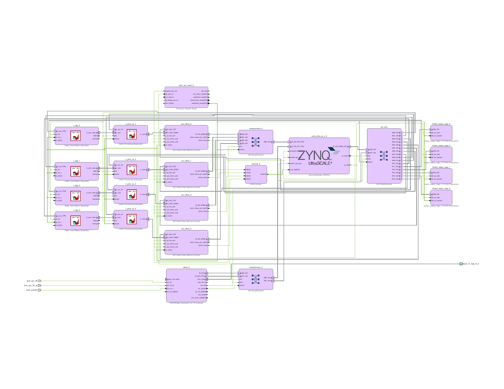

Four Cameras, Coming Home.
I am taking the four-channel KV260 vision system I built for my Avnet test assignment, replacing one synthetic source with a real camera, and turning its output around from PCIe to the board's own HDMI connector.
The design I started with
In May, Avnet gave me two weeks to define and demonstrate a four-camera architecture on an AMD Kria K26 SOM. Each camera was specified as 1920 × 1536 at 30 frames per second, producing 8-bit YUV 4:2:2 after its own ISP. The programmable logic had to convert every stream to RGB, capture all 30 frames per second into PS DDR, deliberately select 10 frames per second for use, and make those raw RGB frames available to a host PC over PCIe.

I built the complete Vivado and Vitis demonstration by hand. This was before I had tried agentic AI. The finished block design contains four independent, concurrent video pipelines. Each begins with a Video Test Pattern Generator configured for a 1920 × 1536 maximum frame, three 8-bit components and two pixels per clock. Each TPG drives its own Video Processing Subsystem over a 48-bit AXI4-Stream Video interface. Each VPSS performs the YUV 4:2:2 to RGB colour-space conversion and drives a dedicated AXI VDMA S2MM channel, again at two RGB pixels per clock.
lane 0: TPG 0 → VPSS 0 → VDMA 0 ┐
lane 1: TPG 1 → VPSS 1 → VDMA 1 ├→ 128-bit SmartConnect → PS S_AXI_HP0_FPD → DDR
lane 2: TPG 2 → VPSS 2 → VDMA 2 ┤
lane 3: TPG 3 → VPSS 3 → VDMA 3 ┘The four VDMAs are write-only, direct-register-mode engines with five frame stores apiece. Their memory-side ports are 64 bits wide; a SmartConnect combines them onto the PS's 128-bit high-performance DDR port. An RGB888 frame is 1920 × 1536 × 3 = 8,847,360 bytes. I reserved a 64 MiB lane span for each stream, producing a 256 MiB capture region beginning at physical address 0x10000000. The five frame stores for one lane consume 44,236,800 bytes, so they fit inside that lane's span without colliding with the next.
The control plane is separate from the pixel and memory planes. The Cortex-A53 side reaches all four TPGs, all four VPSS instances, all four VDMAs and four custom status-register blocks through the PS M_AXI_HPM0_LPD master and a sixteen-output AXI SmartConnect. The PCIe endpoint has a second route into the same controls: its AXI-Lite master owns a 1 MiB aperture in which the VDMAs occupy 0x80000000 through 0x8003ffff, the VPSS blocks 0x80040000 through 0x8007ffff, the TPGs 0x80080000 through 0x800bffff, and the four status blocks 0x800c0000 through 0x800fffff.
The PCIe endpoint is a four-lane XDMA block with one host-to-card and one card-to-host memory-mapped channel, a 64-bit AXI data path and MSI. Its AXI master reaches PS DDR through the second 128-bit high-performance port, S_AXI_HP1_FPD. The project requirement asked for Gen3 x4. I had Codex interrogate the saved project through Vivado MCP and extract the actual IP configuration and address map; the demonstration endpoint is configured for Gen1 x4. That is a property of the artifact, not something to silently round up in a diagram.
I also wrote the bare-metal control program. It initializes each TPG, describes custom 1920 × 1536, 30 Hz input and output streams to the VPSS driver, configures every VDMA with five circular frame buffers and installs four completion and error interrupt handlers in the GIC. On every completed frame it identifies the buffer immediately behind the VDMA's current write index. Two out of every three completions increment a dropped-frame count. The third publishes the completed buffer's 64-bit physical address, lane, dimensions, stride, byte count, pixel format, sequence counters, VDMA status and validity flags through that lane's custom register bank. In other words, the 30-to-10 fps rule is an explicit state machine in software, not an aspiration written beside a block diagram.
Today's change
The old design stops at a useful demonstration boundary: four real pipelines fed by controlled synthetic sources, with raw frames exported to another computer. Today's experiment moves both fingertips. Lane 0 will receive real 8-bit YUV 4:2:2 from the KV260 carrier's AP1302 ISP over four-lane MIPI CSI-2. The other three lanes remain TPGs, so one physical input can be integrated without losing the repeatable reference sources. At the output, the system will no longer publish physical buffer addresses to a PCIe host. Linux on the A53s will own four capture devices, and GStreamer will composite all four streams into a 2 × 2 display on the KV260's HDMI output.
AP1302 → MIPI CSI-2 RX → VPSS CSC → Frame Buffer Write ┐
TPG 1 ───────────────→ VPSS CSC → Frame Buffer Write ├→ PS DDR → V4L2/DMABUF ┐
TPG 2 ───────────────→ VPSS CSC → Frame Buffer Write ┤ ├→ GStreamer compositor → DRM/KMS → HDMI
TPG 3 ───────────────→ VPSS CSC → Frame Buffer Write ┘ ┘Changing the software boundary
Keeping the old AXI VDMAs and teaching a userspace program about their registers and fixed buffer addresses would reproduce the bare-metal contract inside Linux. I am using AMD's Linux video boundary instead. Each lane now ends in a Video Frame Buffer Write IP. The device-tree overlay describes the source, colour-space converter, DMA engine and endpoints as a media graph. The Xilinx video-pipeline driver registers each graph as a V4L2 capture device, and v4l2src performs the streaming ioctls and buffer exchange.
This changes who owns the frame buffers. The old application chose physical addresses and told a remote host which one was ready. In the new system, videobuf2 allocates and queues capture buffers, V4L2 exports them as DMA-BUF file descriptors, and GStreamer can pass those buffers onward without making their physical addresses part of the application contract. The four camera streams remain separate until userspace. Their arrangement on screen—today a 960 × 540 quadrant each in a 1920 × 1080 composition—is policy in the GStreamer pipeline rather than fixed PL topology.
The KV260's HDMI connector does not require a new PL HDMI transmitter here. The Zynq UltraScale+ processing system already has a DisplayPort display subsystem, and the carrier presents that display path through its on-board output hardware. Linux exposes it through DRM/KMS. GStreamer's kmssink is therefore the final fingertip.
Replacing TPG 0
The chosen physical source is the KV260 IAS camera path: an AR1335 sensor behind the carrier's onsemi AP1302 ISP. The AP1302 appears at I2C address 0x3c behind channel 0 of a PCA9546 switch at 0x74. It supplies YUV422-8 on four CSI-2 data lanes, matching the assignment's assumption that the camera contains its own ISP. That means lane 0 does not need a demosaic or gamma stage; the new MIPI CSI-2 Receiver Subsystem decodes the transport, and the existing conceptual CSC stage still owns YUV-to-RGB conversion.
The receiver's packed output and the VPSS input are not the same representation. Vivado 2025.2 configured the receiver for a 32-bit AXI4-Stream output, while the dual-pixel, three-component VPSS input is 48 bits. An AXI4-Stream Subset Converter performs that fingertip adaptation explicitly. This was one of the useful failures from building the design through Vivado rather than drawing a plausible arrow between two blocks.
A clean Vivado design
This should have been an edit to the May project. It was not.
The four status-register blocks were hand-written local IP, and the repository path they came from no longer exists on this machine. Vivado consequently opens the old block design locked. I could have reconstructed the missing repository merely to delete those blocks again, but that felt like repairing a door in order to brick it up. The May project stays exactly where it is, as the assignment artifact. The Linux version gets a new Tcl build.
The script makes one four-lane MIPI receiver, three TPGs, four VPSS colour-space converters and four 128-bit Video Frame Buffer Write engines. All four writers meet at one PS high-performance DDR port. I stopped for the clock arithmetic because 100 MHz looked suspiciously neat: 1920 × 1536 × 30, divided by two pixels per beat, is 44.24 million beats per second. Fine. Each lane has its own stream datapath, so they are not taking turns on one 100 MHz pixel bus. The D-PHY gets a separate 200 MHz clock.
Vivado MCP did the useful sort of automation where the tool remains fully capable of saying no. The first validation objected to two unused PS master ports left alive by the board preset. The next objected that the MIPI receiver spoke packed 32-bit YUV422 while VPSS expected its 48-bit, three-component dialect. It also found that I had made a pointless border crossing between a 100 MHz control plane and a 300 MHz video plane. I removed the unused ports, inserted the explicit stream conversion and brought the video logic back onto the perfectly adequate 100 MHz clock.
Then the Linux bindings wanted reset GPIOs. Then the TPG binding wanted them too. Then the first GPIO numbering was one out because EMIO bit 2 appears to Linux as GPIO 79, not 80. Each discovery was small; each one was hardware; each one bought another trip through implementation. This is how an afternoon acquires a texture.
The last trip was clean. Synthesis completed. Placement and routing finished with no failed nets. Setup slack was 2.039 ns, hold slack 0.010 ns, and bitstream DRC reported zero errors. Vivado left camera_display_wrapper.bit and a fixed, bitstream-bearing kv260-camera.xsa on the floor. I picked them up.
Carrying it into EDF
Not the synth image. New build directory. New image recipe. New firmware bundle. Different SD card. The working synthesizer card remains elsewhere, minding its business; meta-synth and the synth services do not enter this build.
The camera firmware recipe gathers the bitstream, a flat-PL shell.json and the device-tree overlay. I had Codex do the numbing first pass across the Vivado address map, AMD's Smartcam overlay and the kernel bindings. I then read the resulting contract against the hardware while Vivado and the bindings took turns finding things we had missed.
There was one especially modest contribution to computer science. While adding the D-PHY clock, an edit briefly left the CSI node with two clock-names properties. This was not twice as informative. Reading the file back made it obvious; the spare line went away; civilisation continued.
The finished overlay names the AP1302 and its regulators, the I2C switch, CSI-2 receiver, four CSCs, three TPGs, four framebuffer DMAs, five PL interrupts and four media graphs. dfx-mgr loads the bundle. The image adds AMD's Xilinx GStreamer package group, v4l-utils and libdrm-tests to a clean Kria command-line image. The relevant media and DRM drivers are already enabled in the EDF kernel configuration.
A small camera-specific systemd service waits for the PL loader, asks the media controller which /dev/video* node belongs to each named lane, and starts the four-source GStreamer composition. At least, that is the arrangement on paper and in the built hardware. Linux has not had its vote yet.
Result so far
So: not a diagram with hopeful arrows. There is a routed design, a bitstream, an XSA, an EDF layer, a media graph, an image recipe and a display service. They agree about addresses, interrupts, clocks and resets. This is a respectable place to stop for one day.
It is not the same thing as seeing four pictures.
I have not built the camera image, booted its SD card, watched the overlay probe, enumerated the media graphs, received a pixel from the AP1302 or put the four quadrants on an HDMI monitor. The next episode begins with BitBake and, if all goes well, eventually escapes the computer.
□